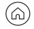

Tanto si eres ciudadano de la Unión Europea como extracomunitario y necesitas orientación con cualquier trámite de extranjería soy la persona adecuada, te acompañaré hasta dar con la mejor solución.
Trámites que gestiono:
Solicitud y renovación de permisos de residencia y trabajo
Reagrupación familiar
Solicitud de nacionalidad española
Tramitación de visado de estudios y autorización de trabajo
Solicitud de asilo y refugio
Obtención del NIE
Tarjeta de residencia de familiar de ciudadano de la UE
Recurso a la expulsión